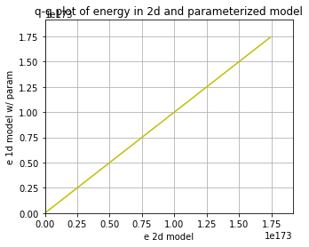
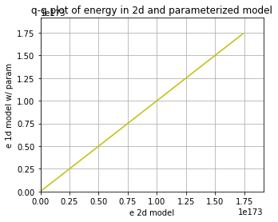
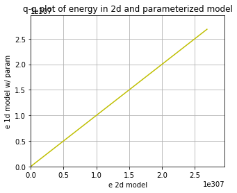
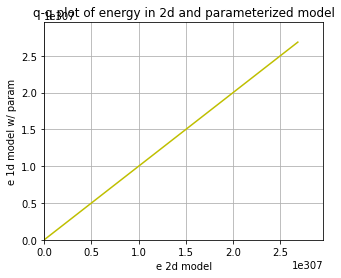

Using neural networks to parameterize advection in L96
Contents
Using neural networks to parameterize advection in L96¶
import matplotlib.pyplot as plt
import numpy as np
from IPython.display import HTML
from L96_model import (
L96,
RK2,
RK4,
EulerFwd,
L96_eq1_xdot,
integrate_L96_2t,
)
from matplotlib.animation import FuncAnimation
time_method = EulerFwd
Introduction¶
We are only going to use the single equation model from Lorenz (1996), or equation 3.1:
The reason we do this is because the advection term has a much larger control on the stability of the system than the scale-interaction term. It is fairly difficult to learn a model for the sub-grid scale term that causes L96 to go unstable so long as the timestep is sufficient to keep the advection term stable.
We want to to look into the stability of a learned parameterization, but to explore the stability in more detail we are going to focus on learning a neural-network for the advection.
It turns out this is rather challening, despite some early indications that it would be easy while I was still learning how to do everything!
Building a 1d and 2d version of the single-equation L96 model:¶
The ‘1d’ in time, or advectionless version of L96 reduces to:
the steady state solution is simply:
and the time-dependent solution is an exponential:
We are going to generate both 2d (w/ advection) and 1d (w/o advection) versions of the L96 model. The 2d model will then be used as training data to build a non-local neural network that can reproduce the effect of including the advection term.
# - This is a standard GCM class including a polynomial parameterization in rhs of equation for tendency.
# In this experiment we will not be using the parameterization in this class but have left it for generality.
class GCM:
def __init__(self, F, parameterization, time_stepping=time_method):
self.F = F
self.parameterization = parameterization
self.time_stepping = time_stepping
def rhs(self, X, param):
return L96_eq1_xdot(X, self.F) + self.parameterization(param, X, self.F)
def __call__(self, X0, dt, nt, param=[0]):
# X0 - initial conditions, dt - time increment, nt - number of forward steps to take
# param - parameters of our closure
time, hist, X = (
dt * np.arange(nt + 1),
np.zeros((nt + 1, len(X0))) * np.nan,
X0.copy(),
)
hist[0] = X
for n in range(nt):
X = self.time_stepping(self.rhs, dt, X, param)
hist[n + 1], time[n + 1] = X, dt * (n + 1)
return hist, time
# - This is the same as the GCM with one notable exception.
# We have set the advection flag to False in the RHS of the L96 equation.
class GCM_1d:
def __init__(self, F, parameterization, time_stepping=time_method):
self.F = F
self.parameterization = parameterization
self.time_stepping = time_stepping
def rhs(self, X, param):
return L96_eq1_xdot(X, self.F, advect=False) + self.parameterization(
param, X, self.F
)
def __call__(self, X0, dt, nt, param=[0]):
# X0 - initial conditions, dt - time increment, nt - number of forward steps to take
# param - parameters of our closure
time, hist, X = (
dt * np.arange(nt + 1),
np.zeros((nt + 1, len(X0))) * np.nan,
X0.copy(),
)
hist[0] = X
for n in range(nt):
X = self.time_stepping(self.rhs, dt, X, param)
hist[n + 1], time[n + 1] = X, dt * (n + 1)
return hist, time
Sample configuration¶
First we will run the 2d and 1d version of the model with a modest forcing of \(F=10\).
We are going to try to simulate the effect of climate model drift on parameter space by running the same model but with \(F=100\).
# Chose a modest forcing and simulate for 100 cycles
Forcing, dt, T = 10, 0.001, 10
Forcing_x10 = Forcing * 10
# Choose an random set of initial conditions
b = 5
init_cond = b * np.random.randn(8)
# ----------------------------------------------------------------
# We create the template 2d GCM here with the polynomial parameterization
# this model will be used to generate training data to learn the advection term.
naive_parameterization = lambda param, X, F: np.polyval(param, X)
gcm_2d = GCM(Forcing, naive_parameterization)
# ----------------------------------------------------------------
# We also create a super GCM for simulation with the forcing of 100.
# This will be used as the truth when we test the ability of the 1d model with the neural network to
# work outside of the parmameter space it was trained.
gcm_2d_x10 = GCM(Forcing_x10, naive_parameterization)
# ----------------------------------------------------------------
# Finally,we build the 1d GCM including the polynomial parameterization,
# and we create the corresponding super GCM with forcing squared.
gcm_1d = GCM_1d(Forcing, naive_parameterization)
gcm_1d_x10 = GCM_1d(Forcing_x10, naive_parameterization)
# Running the 2d and 1d versions of the GCM and GCM with F=100 ("_x10")
x2d, t2d = gcm_2d(
init_cond,
dt,
int(T / dt),
[
0.0,
],
)
x2d_x10, t2d_x10 = gcm_2d_x10(
init_cond,
dt,
int(T / dt),
[
0.0,
],
)
x1d, t1d = gcm_1d(
init_cond,
dt,
int(T / dt),
[
0.0,
],
)
x1d_x10, t1d_x10 = gcm_1d_x10(
init_cond,
dt,
int(T / dt),
[
0.0,
],
)
/usr/share/miniconda/envs/L96M2lines/lib/python3.9/site-packages/numpy/lib/polynomial.py:771: RuntimeWarning: invalid value encountered in multiply
y = y * x + p[i]
Metrics:¶
We are going to track the momentum and energy of L96 via the following metrics:
Energy:¶
These metrics are chosen to track the system. We are looking for a conservative property of the L96 system. It turns out in the single equation form of the L96 problem one of these two metrics is conserved by the advection process, which is the energy like term.
for tup in [2, T]:
F, ax = plt.subplots(1, 2, figsize=(10, 4))
a = ax.ravel()[0]
a.plot(t1d, np.sum(x1d, axis=1), label="1d", color="r", linewidth=2)
a.plot(t2d, np.sum(x2d, axis=1), label="2d", color="b", linewidth=2)
a.legend()
a.grid(True)
a.set_title("L96 momentum")
a.set_xlabel("t")
a.set_ylabel(r"$\sum_k X_k$")
a.set_xlim(0, tup)
a = ax.ravel()[1]
a.plot(t1d, np.sum(x1d**2, axis=1), label="1d", color="r", linewidth=2)
a.plot(t2d, np.sum(x2d**2, axis=1), label="2d", color="b", linewidth=2)
a.legend()
a.grid(True)
a.set_title("L96 energy")
a.set_xlabel("t")
a.set_ylabel(r"$\sum_k X_k^2$")
a.set_xlim(0, tup)
F.tight_layout();


Demo: Conservation of energy in L96¶
To demonstrate the conservation of energy in L96 advection we build a model with 0 forcing and 0 damping.
Note that the cyan line is an experiment only undergoing forcing by the advection term. The momentum is clearly not conserved, but the energy is (maybe not in the Euler Forward case…).
# Zero the forcing
Forcing_demo = 0
# Zero the damping via a linear parameterization term:
P_nodamp = [1.0, 0.0]
# Running the 2d and 1d versions of the GCM and GCM with squared forcing ("s")
gcm_2d_demo = GCM(Forcing_demo, naive_parameterization)
# The parameterization here is countering the decay term to demonstrate the conservation of this system
x2d_demo, t2d_demo = gcm_2d_demo(init_cond, dt, int(T / dt), P_nodamp)
for tup in [2, T]:
F, ax = plt.subplots(1, 2, figsize=(10, 4))
a = ax.ravel()[0]
a.plot(
t2d_demo,
np.sum(x2d_demo, axis=1),
label="2d, F=0 no damp",
color="c",
linewidth=2,
)
a.plot(t2d, np.sum(x2d, axis=1), label="2d, F=10", color="b", linewidth=2)
a.legend()
a.grid(True)
a.set_title("L96 momentum")
a.set_xlabel("t")
a.set_ylabel(r"$\sum_k X_k$")
a.set_xlim(0, tup)
a = ax.ravel()[1]
a.plot(
t2d_demo,
np.sum(x2d_demo**2, axis=1),
label="2d, F=0 no damp",
color="c",
linewidth=2,
)
a.plot(t2d, np.sum(x2d**2, axis=1), label="2d, F=10", color="b", linewidth=2)
a.legend()
a.grid(True)
a.set_title("L96 energy")
a.set_xlabel("t")
a.set_ylabel(r"$\sum_k X_k^2$")
a.set_xlim(0, tup)
F.tight_layout();


Building a dataset of advection tendencies to learn¶
In the next section we are going to create a dataset of advection tendencies to learn
N = 50000
X = []
Xm1 = []
Xm2 = []
Xp1 = []
Adv = []
# randomize the initial condition and run 1000 time-step spin up with the real world model
init_condr = 10 * np.random.randn(8)
x_2, _ = gcm_2d(
init_condr,
0.001,
1000,
[
0.0,
],
)
for ti in range(N):
# Set the initial condition from the spin up/2d model
init_condr_up = x_2[-1, :]
# Real world values
x_2, _ = gcm_2d(
init_condr_up,
0.001,
1,
[
0.0,
],
)
# Simple model values
x_1, _ = gcm_1d(
init_condr_up,
0.001,
1,
[
0.0,
],
)
# This is the difference in the tendency term due to neglecting 2d processes per time-step
Adv.append((x_2[-1, :] - x_1[-1, :]).ravel() / 0.001)
# Storing the state variable and its rolled forms for plotting and learning convenience
X.append(x_1[-1, :].ravel())
Xm1.append(np.roll(x_1[-1, :], 1).ravel())
Xm2.append(np.roll(x_1[-1, :], 2).ravel())
Xp1.append(np.roll(x_1[-1, :], -1).ravel())
X = np.array(X)
Xm1 = np.array(Xm1)
Xm2 = np.array(Xm2)
Xp1 = np.array(Xp1)
Adv = np.array(Adv)
Choosing a parameter to parameterize from¶
If we were simply looking at data and knew that the advection term was a missing force, we might start by looking at correlations with \(X_k\) values, but we would quickly relize that this is not effective.
Even taking part of the actual advection term does not yield a useful feature parameter
plt.figure()
plt.plot(X, Adv, "k.")
plt.xlabel("$X_{k}$")
plt.ylabel("Advection")
plt.figure()
plt.plot(Xm1, Adv, "k.")
plt.xlabel("$X_{k-1}$")
plt.ylabel("Advection")
plt.figure()
plt.plot(Xp1, Adv, "k.")
plt.xlabel("$X_{k+1}$")
plt.ylabel("Advection")
plt.figure()
plt.plot(Xm2 - Xp1, Adv, "k.")
plt.xlabel("$X_{k-2}-X_{k+1}$")
plt.ylabel("Advection")
Text(0, 0.5, 'Advection')


Let’s now just assume that we knew the form of the advection term. We now get something that looks like a 1:1 linear relationship between the observed advection term and the correct feature parameter. It is not perfect because the values we are using for \(X_k\) are not consistent with the RK4 time stepping (if we used forward Euler we would get a perfit fit).
# We are going to assume we know the feature variable that we need to train the model.
# However, because of sampling across a time-step we will not fit a perfect 1:1,
# we end up with something very close to 1:1, but we will use a higher order polynomial that will
# fail when used outside the training data.
plt.figure(figsize=(5, 4))
Feature = -Xm1 * (np.array(Xm2) - np.array(Xp1))
plt.plot(Feature, Adv, "r.")
plt.xlabel("$X_{k-1}(X_{k-2}-X_{k+1})$")
plt.ylabel("Advection tendency")
# Here use a 10th order polynomial that is it to the advection tendencies.
# This parameterization will probably fail when used outside of the training data.
P = np.polyfit(np.array(Feature).ravel(), np.array(Adv).ravel(), 1)
print("Fit (slope/bias): ", P)
FS = [-200, 200]
plt.plot(FS, np.polyval(P, FS), "g-", label="polynomial parameterization")
plt.plot(FS, FS, "k--", label="1:1")
plt.xlim(-200, 200)
plt.ylim(-200, 200)
plt.grid(True)
Fit (slope/bias): [ 1.0011509 -0.00624808]

# Create a new 1d GCM with a parameterization for the advection based on the known advection parameter
advection_parameterization = lambda param, X, F: np.polyval(
param, -np.roll(X, 1) * (np.roll(X, 2) - np.roll(X, -1))
)
gcm_1d_padv = GCM_1d(Forcing, advection_parameterization)
gcm_1d_padv_x10 = GCM_1d(Forcing_x10, advection_parameterization)
# Here is the 1d GCM with the learned advection via the linear parameterization
xplinear, tplinear = gcm_1d_padv(init_cond, dt, int(T / dt), P)
# And the same 1d GCM applied out of sample
xplinear_x10, tplinear_x10 = gcm_1d_padv_x10(init_cond, dt, int(T / dt), P)
/tmp/ipykernel_2069/2415865238.py:3: RuntimeWarning: overflow encountered in multiply
param, -np.roll(X, 1) * (np.roll(X, 2) - np.roll(X, -1))
/usr/share/miniconda/envs/L96M2lines/lib/python3.9/site-packages/numpy/lib/polynomial.py:771: RuntimeWarning: invalid value encountered in multiply
y = y * x + p[i]
def CompExps(Exp1, ExpN):
# Exp1 - reference experiment list
# ExpN - list of comparison experiments
try:
T1 = Exp1[0]
X1 = Exp1[1]
L1 = Exp1[2]
F, ax = plt.subplots(1, 2, figsize=(10, 4))
a = ax.ravel()[0]
a.plot(T1, np.sum(X1, axis=1), label=L1, color="k", linewidth=3)
a = ax.ravel()[1]
a.plot(T1, np.sum(X1**2, axis=1), label=L1, color="k", linewidth=3)
F2, ax2 = plt.subplots(1, figsize=(5, 4))
for Exp in ExpN:
TN = Exp[0]
XN = Exp[1]
LN = Exp[2]
a = ax.ravel()[0]
a.plot(TN, np.sum(XN, axis=1), label=LN, linewidth=2)
a = ax.ravel()[1]
a.plot(TN, np.sum(XN**2, axis=1), label=LN, linewidth=2)
_X = []
_Y = []
for ii in range(1, 100, 1):
_X.append(np.percentile(np.sum(X1[int(5 // dt) :] ** 2, axis=1), ii))
_Y.append(np.percentile(np.sum(XN[int(5 // dt) :] ** 2, axis=1), ii))
ax2.plot(_X, _Y, ".-", label=LN)
for ii in range(2):
a = ax.ravel()[ii]
a.legend()
a.grid(True)
ax[0].set(ylabel=r"$\sum_k X_k$", xlabel=r"$t$")
ax[1].set(ylabel=r"$\sum_k X_k^2$", xlabel=r"$t$")
F.tight_layout()
ax2.grid(True)
ax2.set(
xlabel="e 2d model",
ylabel="e 1d model w/ param",
title="q-q plot of energy in 2d and parameterized model",
)
LIM = np.nanmax(list(_X) + list(_Y))
ax2.set_xlim(0, LIM * 1.1)
ax2.set_ylim(0, LIM * 1.1)
ax2.plot([0, LIM], [0, LIM], "y-")
pass
except:
pass
CompExps(
[t2d, x2d, "2d"],
[
[tplinear, xplinear, "1d w/ linear"],
],
)


CompExps(
[t2d_x10, x2d_x10, "2d"],
[
[tplinear_x10, xplinear_x10, "1d w/ linear"],
],
)
/usr/share/miniconda/envs/L96M2lines/lib/python3.9/site-packages/numpy/core/fromnumeric.py:86: RuntimeWarning: invalid value encountered in reduce
return ufunc.reduce(obj, axis, dtype, out, **passkwargs)
/tmp/ipykernel_2069/2792372065.py:13: RuntimeWarning: overflow encountered in square
a.plot(T1, np.sum(X1**2, axis=1), label=L1, color="k", linewidth=3)
/tmp/ipykernel_2069/2792372065.py:25: RuntimeWarning: overflow encountered in square
a.plot(TN, np.sum(XN**2, axis=1), label=LN, linewidth=2)
/tmp/ipykernel_2069/2792372065.py:48: RuntimeWarning: All-NaN axis encountered
LIM = np.nanmax(list(_X) + list(_Y))


What if we chose the wrong feature?¶
It turns out you can find features that are approximately correct and build a decent model for the advection
# Now we use a feature that is wrong to train the model
plt.figure()
Feature = -(np.array(Xm2) - np.array(Xp1) * np.array(Xm1))
plt.plot(Feature, Adv, "r.")
plt.xlabel("$(X_{k-1}-X_{k+1})$")
plt.ylabel("Advection tendency/Forcing")
# Here use a 10th order polynomial that is it to the advection tendencies.
# This parameterization will probably fail when used outside of the training data.
P_wrong = np.polyfit(np.array(Feature).ravel(), np.array(Adv).ravel(), 1)
FS = np.sort(np.array(Feature).ravel())
plt.plot(FS, np.polyval(P_wrong, FS), "g-", label="polynomial parameterization");

# Create a new 1d GCM with a 2d parameterization
advection_parameterization_wrong = lambda param, X, F: np.polyval(
param, -(np.roll(X, 2) - np.roll(X, -1) * np.roll(X, 1))
)
gcm_1d_padv_wrong = GCM_1d(Forcing, advection_parameterization_wrong)
# Here is the 1d GCM with the learned advection via the 10th order polynomial
x_wrongp, t_wrongp = gcm_1d_padv_wrong(init_cond, dt, int(T / dt), P_wrong)
CompExps(
[t2d, x2d, "2d"],
[
[t_wrongp, x_wrongp, "1d w/ wrong linear"],
],
)
/tmp/ipykernel_2069/2520304281.py:3: RuntimeWarning: overflow encountered in multiply
param, -(np.roll(X, 2) - np.roll(X, -1) * np.roll(X, 1))
/tmp/ipykernel_2069/2792372065.py:25: RuntimeWarning: overflow encountered in square
a.plot(TN, np.sum(XN**2, axis=1), label=LN, linewidth=2)


Using the wrong feature gave us a very unstable model with advection that does not work.
In the following, we will try to learn the advection from a neural network. This result shows that we need to do something quite skillful to have a stable system.
Using the 3-layer non-local neural network¶
Now we can forget about neading to know the right form of the advection term. We are instead just going to throw the information from the advection scheme to the non-local neural network and let it learn the advection for itself.
These follow the templates from the exercise led by Janni in week 4.
I’m quite new to neural networks, so please let me know if you see any obvious mistakes in my approach!
import torch
import torch.nn.functional as F
import torch.utils.data as Data
import torchvision
from sklearn.metrics import r2_score
from torch import nn, optim
from torch.autograd import Variable
np.random.seed(14) # For reproducibility
torch.manual_seed(14) # For reproducibility
<torch._C.Generator at 0x7f176533a1f0>
I’m going to start by scaling the data so that it is approximately order 1.¶
It looks like we can scaling \(X\) and the advection with the forcing and forcing squared, respectively (we will come back to this assumption).
plt.figure()
plt.plot(X, Adv, "k.")
plt.xlabel("$X_k$")
plt.ylabel("$Adv_k$")
X_F = X / Forcing
Adv_F = Adv / Forcing**2
print("Advection RMS:", np.sqrt(np.mean(Adv**2)))
print("X RMS:", np.sqrt(np.mean(X**2)))
plt.figure()
plt.plot(X_F, Adv_F, "k.")
plt.xlabel("$X_k/F$")
plt.ylabel("$Adv_k/F^2$")
print("Scaled Advection RMS:", np.sqrt(np.mean(Adv_F**2)))
print("Scaled X RMS:", np.sqrt(np.mean(X_F**2)))
Advection RMS: 30.076933942741384
X RMS: 5.199497514738933
Scaled Advection RMS: 0.30076933942741385
Scaled X RMS: 0.5199497514738933


# Split into 80% training and 20% testing.
L = int(len(X) * 0.8)
# Create non local training data
# Define a data loader (8 inputs, 8 outputs)
# Define our X,Y pairs (state, subgrid tendency) for the linear regression local network.local_torch_dataset = Data.TensorDataset(
torch_dataset = Data.TensorDataset(
torch.from_numpy(np.array(X_F[:L])).double(),
torch.from_numpy(np.array(Adv_F[:L])).double(),
)
BATCH_SIZE = 1024 # Number of sample in each batch
loader = Data.DataLoader(dataset=torch_dataset, batch_size=BATCH_SIZE, shuffle=True)
print("N training data: ", len(X_F[:L]))
N training data: 40000
print("N testing data: ", len(X_F[L:]))
# Define a test dataloader (8 inputs, 8 outputs)
torch_dataset_test = Data.TensorDataset(
torch.from_numpy(np.array(X_F[L:])).double(),
torch.from_numpy(np.array(Adv_F[L:])).double(),
)
loader_test = Data.DataLoader(
dataset=torch_dataset_test, batch_size=BATCH_SIZE, shuffle=True
)
N testing data: 10000
# define network structure in pytorch
import torch.nn.functional as FF
class Net_ANN(nn.Module):
def __init__(self):
super(Net_ANN, self).__init__()
self.linear1 = nn.Linear(8, 16) # 8 inputs, 16 neurons for first hidden layer
self.linear2 = nn.Linear(16, 16) # 16 neurons for second hidden layer
self.linear3 = nn.Linear(16, 8) # 8 outputs
# self.lin_drop = nn.Dropout(0.1) #regularization method to prevent overfitting.
def forward(self, x):
x = FF.relu(self.linear1(x))
x = FF.relu(self.linear2(x))
x = self.linear3(x)
return x
def train_model(net, criterion, trainloader, optimizer):
net.train()
test_loss = 0
for step, (batch_x, batch_y) in enumerate(trainloader): # for each training step
b_x = Variable(batch_x) # Inputs
b_y = Variable(batch_y) # outputs
if (
len(b_x.shape) == 1
): # If is needed to add a dummy dimension if our inputs are 1D (where each number is a different sample)
prediction = torch.squeeze(
net(torch.unsqueeze(b_x, 1))
) # input x and predict based on x
else:
prediction = net(b_x)
loss = criterion(prediction, b_y) # Calculating loss
optimizer.zero_grad() # clear gradients for next train
loss.backward() # backpropagation, compute gradients
optimizer.step() # apply gradients to update weights
def test_model(net, criterion, trainloader, optimizer, text="validation"):
net.eval() # Evaluation mode (important when having dropout layers)
test_loss = 0
with torch.no_grad():
for step, (batch_x, batch_y) in enumerate(
trainloader
): # for each training step
b_x = Variable(batch_x) # Inputs
b_y = Variable(batch_y) # outputs
if (
len(b_x.shape) == 1
): # If is needed to add a dummy dimension if our inputs are 1D (where each number is a different sample)
prediction = torch.squeeze(
net(torch.unsqueeze(b_x, 1))
) # input x and predict based on x
else:
prediction = net(b_x)
loss = criterion(prediction, b_y) # Calculating loss
test_loss = test_loss + loss.data.numpy() # Keep track of the loss
test_loss /= len(trainloader) # dividing by the number of batches
# print(len(trainloader))
print(text + " loss:", test_loss)
return test_loss
criterion = torch.nn.MSELoss() # MSE loss function
torch.manual_seed(14) # For reproducibility
nn_3l = Net_ANN().double()
n_epochs = 20 # Number of epocs
optimizer = optim.Adam(nn_3l.parameters(), lr=0.03)
validation_loss = list()
train_loss = list()
# time0 = time()
for epoch in range(1, n_epochs + 1):
train_model(nn_3l, criterion, loader, optimizer)
train_loss.append(test_model(nn_3l, criterion, loader, optimizer, "train"))
validation_loss.append(test_model(nn_3l, criterion, loader_test, optimizer))
plt.plot(train_loss, "b", label="training loss")
plt.plot(validation_loss, "r", label="validation loss")
plt.legend();
train loss: 0.025024139146328124
validation loss: 0.0328615445197121
train loss: 0.014896808727525987
validation loss: 0.0199358998774871
train loss: 0.01251397559260679
validation loss: 0.017783453346545262
train loss: 0.01026258142818125
validation loss: 0.014637648053671789
train loss: 0.010587044484392624
validation loss: 0.015120471032021516
train loss: 0.010262826999608583
validation loss: 0.014004906561174568
train loss: 0.00914460351869744
validation loss: 0.013449060083925749
train loss: 0.009402656268592043
validation loss: 0.013262258620009182
train loss: 0.009486444284867786
validation loss: 0.013546633704576705
train loss: 0.009553975997553933
validation loss: 0.013282224062976055
train loss: 0.009139082109666585
validation loss: 0.013416537480568752
train loss: 0.008816264667776418
validation loss: 0.013039037861372019
train loss: 0.00897608870129928
validation loss: 0.013075176296710187
train loss: 0.009494194070276516
validation loss: 0.013231047758263902
train loss: 0.008500831225890067
validation loss: 0.012303209212208973
train loss: 0.008690836787656493
validation loss: 0.012391290914046078
train loss: 0.00797969702051924
validation loss: 0.011963223224878066
train loss: 0.008344255129854136
validation loss: 0.012782440142809123
train loss: 0.00881582142276575
validation loss: 0.013248645064987009
train loss: 0.008248900206567739
validation loss: 0.013054808472518286

# The neural network does a pretty good job predicting the advection tendencies
preds22 = nn_3l(torch.from_numpy(np.array(X_F)).double())
plt.figure()
plt.plot(preds22.detach().numpy()[0:, 2], label="NN Predicted values")
plt.plot(Adv_F[:, 2], label="True values")
plt.legend()
plt.figure()
plt.plot(Adv_F[:, 2], preds22.detach().numpy()[0:, 2], "k.")
plt.xlabel("Actual")
plt.ylabel("Prediction")
pass
Xt = init_cond
Advr = -np.roll(Xt, 1) * (np.roll(Xt, 2) - np.roll(Xt, -1))
nnAdv = nn_3l(torch.from_numpy(np.array(Xt / Forcing)).double()).detach().numpy()
plt.figure()
plt.plot(Advr, "k-")
plt.plot(nnAdv * Forcing**2, "r-")
[<matplotlib.lines.Line2D at 0x7f174c773340>]


# - a GCM class including a neural network parameterization in rhs of equation for tendency
class GCM_network:
def __init__(self, F, network, time_stepping=time_method):
self.F = F
self.network = network
self.time_stepping = time_stepping
def rhs(self, X, param):
if self.network.linear1.in_features == 1:
X_torch = torch.from_numpy(X / self.F).double()
X_torch = torch.unsqueeze(X_torch, 1)
else:
X_torch = torch.from_numpy(np.expand_dims(X / self.F, 0)).double()
return L96_eq1_xdot(
X,
self.F + self.F**2 * np.squeeze(self.network(X_torch).data.numpy()),
advect=False,
) # Adding NN parameterization
def __call__(self, X0, dt, nt, param=[0]):
# X0 - initial conditions, dt - time increment, nt - number of forward steps to take
# param - parameters of our closure
time, hist, X = (
dt * np.arange(nt + 1),
np.zeros((nt + 1, len(X0))) * np.nan,
X0.copy(),
)
hist[0] = X
for n in range(nt):
X = self.time_stepping(self.rhs, dt, X, param)
hist[n + 1], time[n + 1] = X, dt * (n + 1)
return hist, time
# Run a test with the parameterization
gcm_nn = GCM_network(Forcing, nn_3l)
xnn, tnn = gcm_nn(init_cond, dt, int(T / (dt)), nn_3l)
gcm_nn_x10 = GCM_network(Forcing_x10, nn_3l)
xnn_x10, tnn_x10 = gcm_nn_x10(init_cond, dt, int(T / (dt)), nn_3l)
CompExps(
[t2d, x2d, "2d"],
[
[tnn, xnn, "1d w/ neural network"],
],
)


CompExps(
[t2d_x10, x2d_x10, "2d"],
[
[tnn_x10, xnn_x10, "1d w/ neural network"],
],
)
/usr/share/miniconda/envs/L96M2lines/lib/python3.9/site-packages/numpy/core/fromnumeric.py:86: RuntimeWarning: invalid value encountered in reduce
return ufunc.reduce(obj, axis, dtype, out, **passkwargs)
/tmp/ipykernel_2069/2792372065.py:13: RuntimeWarning: overflow encountered in square
a.plot(T1, np.sum(X1**2, axis=1), label=L1, color="k", linewidth=3)
 

def my_loss2(inpt, output, target):
# In which we add conservation of "momentum" to our loss function
loss = torch.mean(2 * (output - target) ** 2) + torch.mean(
torch.sum(output, axis=1) ** 2
)
return loss
def train_model2(net, criterion, trainloader, optimizer):
net.train()
test_loss = 0
for step, (batch_x, batch_y) in enumerate(trainloader): # for each training step
b_x = Variable(batch_x) # Inputs
b_y = Variable(batch_y) # outputs
if (
len(b_x.shape) == 1
): # If is needed to add a dummy dimension if our inputs are 1D (where each number is a different sample)
prediction = torch.squeeze(
net(torch.unsqueeze(b_x, 1))
) # input x and predict based on x
else:
prediction = net(b_x)
loss = criterion(b_x, prediction, b_y) # Calculating loss
optimizer.zero_grad() # clear gradients for next train
loss.backward() # backpropagation, compute gradients
optimizer.step() # apply gradients to update weights
def test_model2(net, criterion, trainloader, optimizer, text="validation"):
net.eval() # Evaluation mode (important when having dropout layers)
test_loss = 0
with torch.no_grad():
for step, (batch_x, batch_y) in enumerate(
trainloader
): # for each training step
b_x = Variable(batch_x) # Inputs
b_y = Variable(batch_y) # outputs
if (
len(b_x.shape) == 1
): # If is needed to add a dummy dimension if our inputs are 1D (where each number is a different sample)
prediction = torch.squeeze(
net(torch.unsqueeze(b_x, 1))
) # input x and predict based on x
else:
prediction = net(b_x)
loss = criterion(b_x, prediction, b_y) # Calculating loss
test_loss = test_loss + loss.data.numpy() # Keep track of the loss
test_loss /= len(trainloader) # dividing by the number of batches
# print(len(trainloader))
print(text + " loss:", test_loss)
return test_loss
torch.manual_seed(14) # For reproducibility
nn_3l_loss2 = Net_ANN().double()
n_epochs = 30 # Number of epocs
optimizer = optim.Adam(nn_3l_loss2.parameters(), lr=0.02)
validation_loss = list()
train_loss = list()
# time0 = time()
for epoch in range(1, n_epochs + 1):
train_model2(nn_3l_loss2, my_loss2, loader, optimizer)
train_loss.append(test_model2(nn_3l_loss2, my_loss2, loader, optimizer, "train"))
validation_loss.append(test_model2(nn_3l_loss2, my_loss2, loader_test, optimizer))
plt.plot(train_loss, "b", label="training loss")
plt.plot(validation_loss, "r", label="validation loss")
plt.legend();
train loss: 0.12086303224914777
validation loss: 0.13242255781338658
train loss: 0.0783936795978836
validation loss: 0.09000179574023329
train loss: 0.05982334232228557
validation loss: 0.06609193605863305
train loss: 0.05456432386387129
validation loss: 0.06379293943528039
train loss: 0.041562563008565076
validation loss: 0.05081984545719159
train loss: 0.03977594342650719
validation loss: 0.04872404694878104
train loss: 0.040485755956842354
validation loss: 0.04857341828006551
train loss: 0.03819238074348348
validation loss: 0.045249641917856666
train loss: 0.037370121267395105
validation loss: 0.04499037031791982
train loss: 0.038844068602696666
validation loss: 0.04613973502516837
train loss: 0.03819592075390617
validation loss: 0.04612988189208038
train loss: 0.03719615949988758
validation loss: 0.04374810347419435
train loss: 0.03981591793220436
validation loss: 0.04704116227447701
train loss: 0.03628054322636378
validation loss: 0.04327903324724693
train loss: 0.03514509591742263
validation loss: 0.042800924105833485
train loss: 0.03577695037676772
validation loss: 0.04190562360482042
train loss: 0.035267482697671285
validation loss: 0.04246836209020168
train loss: 0.03483442324520733
validation loss: 0.041989198653037706
train loss: 0.03533591654638994
validation loss: 0.04245130815970305
train loss: 0.035103106079293324
validation loss: 0.0433169305677692
train loss: 0.035477972555127094
validation loss: 0.042522132692867476
train loss: 0.03427739425378714
validation loss: 0.041420579722714915
train loss: 0.03533913897968401
validation loss: 0.04285048576802777
train loss: 0.035707870099241354
validation loss: 0.04305575240790318
train loss: 0.034253102639012434
validation loss: 0.04086154986427372
train loss: 0.03499503391186538
validation loss: 0.042659681678778774
train loss: 0.03410699550588446
validation loss: 0.04074008900472988
train loss: 0.03413630556363435
validation loss: 0.04166720245211969
train loss: 0.03392695496615912
validation loss: 0.04132762225344762
train loss: 0.03366043293811966
validation loss: 0.04135231508700269

# The neural network does a pretty good job predicting the advection tendencies
preds22o = nn_3l(torch.from_numpy(np.array(X_F)).double())
preds22 = nn_3l_loss2(torch.from_numpy(np.array(X_F)).double())
plt.figure()
plt.plot(preds22.detach().numpy()[0:, 2], label="NN Predicted values")
plt.plot(Adv_F[:, 2], label="True values")
plt.legend()
plt.figure()
plt.plot(Adv_F[:, 2], preds22.detach().numpy()[0:, 2], "k.")
plt.xlabel("Actual")
plt.ylabel("Prediction")
plt.figure()
plt.plot(np.sum(preds22o.detach().numpy(), axis=1), "r.")
plt.plot(np.sum(preds22.detach().numpy(), axis=1), "k.")
plt.ylabel("Prediction momentum")
Xt = init_cond
Advr = -np.roll(Xt, 1) * (np.roll(Xt, 2) - np.roll(Xt, -1))
nnAdv = nn_3l_loss2(torch.from_numpy(np.array(Xt / Forcing)).double()).detach().numpy()
plt.figure()
plt.plot(Advr, "k-", label="actual")
plt.plot(nnAdv * Forcing**2, "r-", label="predicted")
pass;


gcm_nn2 = GCM_network(Forcing, nn_3l_loss2)
xnn2, tnn2 = gcm_nn2(init_cond, dt, int(T / (dt)), nn_3l_loss2)
gcm_nn2_x10 = GCM_network(Forcing_x10, nn_3l_loss2)
xnn2_x10, tnn2_x10 = gcm_nn2_x10(init_cond, dt, int(T / (dt)), nn_3l_loss2)
CompExps(
[t2d, x2d, "2d"],
[
[tnn2, xnn2, "1d w/ NN conserving momentum"],
],
)


CompExps(
[t2d_x10, x2d_x10, "2d"],
[
[tnn2_x10, xnn2_x10, "1d w/ NN conserving momentum"],
],
)
/tmp/ipykernel_2069/2792372065.py:13: RuntimeWarning: overflow encountered in square
a.plot(T1, np.sum(X1**2, axis=1), label=L1, color="k", linewidth=3)
/tmp/ipykernel_2069/2792372065.py:25: RuntimeWarning: overflow encountered in square
a.plot(TN, np.sum(XN**2, axis=1), label=LN, linewidth=2)
/usr/share/miniconda/envs/L96M2lines/lib/python3.9/site-packages/numpy/core/fromnumeric.py:86: RuntimeWarning: overflow encountered in reduce
return ufunc.reduce(obj, axis, dtype, out, **passkwargs)
/tmp/ipykernel_2069/2792372065.py:31: RuntimeWarning: overflow encountered in square
_Y.append(np.percentile(np.sum(XN[int(5 // dt) :] ** 2, axis=1), ii))
/usr/share/miniconda/envs/L96M2lines/lib/python3.9/site-packages/numpy/lib/function_base.py:4009: RuntimeWarning: invalid value encountered in subtract
diff_b_a = subtract(b, a)
/usr/share/miniconda/envs/L96M2lines/lib/python3.9/site-packages/matplotlib/axes/_base.py:2924: RuntimeWarning: overflow encountered in double_scalars
x0, x1 = inverse_trans.transform([x0t - delta, x1t + delta])
 

How about with some regularization?¶
torch.manual_seed(14) # For reproducibility
nn_3l_loss3 = Net_ANN().double()
n_epochs = 50 # Number of epocs
optimizer = optim.Adam(nn_3l_loss3.parameters(), lr=0.01, weight_decay=0.01)
validation_loss = list()
train_loss = list()
# time0 = time()
for epoch in range(1, n_epochs + 1):
train_model2(nn_3l_loss3, my_loss2, loader, optimizer)
train_loss.append(test_model2(nn_3l_loss3, my_loss2, loader, optimizer, "train"))
validation_loss.append(test_model2(nn_3l_loss3, my_loss2, loader_test, optimizer))
plt.plot(train_loss, "b", label="training loss")
plt.plot(validation_loss, "r", label="validation loss")
plt.legend();
train loss: 0.16400622248877167
validation loss: 0.16999576084362877
train loss: 0.14442338532176052
validation loss: 0.14933337923953902
train loss: 0.1304995083577473
validation loss: 0.13562306899873736
train loss: 0.12616074467825822
validation loss: 0.13225122386539392
train loss: 0.12419701326228563
validation loss: 0.1309168172838983
train loss: 0.1228584015779863
validation loss: 0.12968538270306093
train loss: 0.12261177182256786
validation loss: 0.12964829696418284
train loss: 0.12180399295580904
validation loss: 0.1294211123474663
train loss: 0.12137916220010732
validation loss: 0.12883351039154958
train loss: 0.12020581225274074
validation loss: 0.1276225128092508
train loss: 0.12031439005888038
validation loss: 0.1274506641316931
train loss: 0.11955594517846428
validation loss: 0.12654449324243383
train loss: 0.11906359788741158
validation loss: 0.12615571959354835
train loss: 0.11952239779049204
validation loss: 0.12640932873016963
train loss: 0.11788717831651599
validation loss: 0.12529503737282577
train loss: 0.11885442276045835
validation loss: 0.12424717223559681
train loss: 0.11838882850511365
validation loss: 0.1259711795147082
train loss: 0.11853823836982044
validation loss: 0.12492237208604406
train loss: 0.11751626314385175
validation loss: 0.12447495858231292
train loss: 0.11720979597408568
validation loss: 0.12370443522961752
train loss: 0.11734335659861124
validation loss: 0.12407051800858948
train loss: 0.11609531922614487
validation loss: 0.12299691620027593
train loss: 0.11638769067732227
validation loss: 0.1232882501307786
train loss: 0.1169325430467039
validation loss: 0.12432791915621114
train loss: 0.11599848539047657
validation loss: 0.12229603439156775
train loss: 0.11631886335788051
validation loss: 0.12397692567887526
train loss: 0.11586370175041724
validation loss: 0.12213636257204744
train loss: 0.11473284341883087
validation loss: 0.12166923184835751
train loss: 0.1134591058897424
validation loss: 0.12021017056597653
train loss: 0.11242482736049024
validation loss: 0.11969190894520051
train loss: 0.11192321524705282
validation loss: 0.11801326132944139
train loss: 0.11080170998299041
validation loss: 0.11720581720121317
train loss: 0.11174561045346595
validation loss: 0.11752962655894268
train loss: 0.11112063784343691
validation loss: 0.11776413275868156
train loss: 0.11085847547523771
validation loss: 0.11692716451414628
train loss: 0.1110627595936496
validation loss: 0.11676219612134275
train loss: 0.11085292975148497
validation loss: 0.11671105203403949
train loss: 0.11150397927755892
validation loss: 0.11848315106950318
train loss: 0.1115416171877921
validation loss: 0.11825842756314105
train loss: 0.11174373721155677
validation loss: 0.118238758388867
train loss: 0.11074093379156773
validation loss: 0.11643780171583133
train loss: 0.11067108912360521
validation loss: 0.1166278908427518
train loss: 0.11098566150407603
validation loss: 0.11731337067665495
train loss: 0.11062502882844416
validation loss: 0.11768162732045988
train loss: 0.11134787978653775
validation loss: 0.1179414502482045
train loss: 0.11118612237060073
validation loss: 0.11768816391422232
train loss: 0.11175506735953258
validation loss: 0.11866832431325285
train loss: 0.11134271851495554
validation loss: 0.1170140273908326
train loss: 0.11067243574924798
validation loss: 0.11655518029816622
train loss: 0.11056256828017937
validation loss: 0.1165159966071824
# The neural network does a pretty good job predicting the advection tendencies
preds22o = nn_3l(torch.from_numpy(np.array(X_F)).double())
preds22 = nn_3l_loss3(torch.from_numpy(np.array(X_F)).double())
plt.figure()
plt.plot(preds22.detach().numpy()[0:, 2], label="NN Predicted values")
plt.plot(Adv_F[:, 2], label="True values")
plt.legend()
plt.figure()
plt.plot(Adv_F[:, 2], preds22.detach().numpy()[0:, 2], "k.")
plt.xlabel("Actual")
plt.ylabel("Prediction")
plt.figure()
plt.plot(np.sum(preds22o.detach().numpy(), axis=1), "r.")
plt.plot(np.sum(preds22.detach().numpy(), axis=1), "k.")
plt.ylabel("Prediction momentum")
Xt = init_cond
Advr = -np.roll(Xt, 1) * (np.roll(Xt, 2) - np.roll(Xt, -1))
nnAdv = nn_3l_loss3(torch.from_numpy(np.array(Xt / Forcing)).double()).detach().numpy()
plt.figure()
plt.plot(Advr, "k-", label="actual")
plt.plot(nnAdv * Forcing**2, "r-", label="predicted")
pass;


gcm_nn3 = GCM_network(Forcing, nn_3l_loss3)
xnn3, tnn3 = gcm_nn3(init_cond, dt, int(T / (dt)), nn_3l_loss3)
gcm_nn3_x10 = GCM_network(Forcing_x10, nn_3l_loss3)
xnn3_x10, tnn3_x10 = gcm_nn3_x10(init_cond, dt, int(T / (dt)), nn_3l_loss3)
CompExps(
[t2d, x2d, "2d"],
[
[tnn3, xnn3, "1d w/ NN momentum reg."],
[t1d, x1d, "1d "],
],
)


CompExps(
[t2d, x2d, "2d"],
[
[tnn3_x10, xnn3_x10, "1d w/ NN momentum reg."],
],
)


Try a different scaling term¶
Could scaling with the Forcing be the issue?
# Use the advection tendencies, splitting into 80% training and 20% testing.
L = int(len(X) * 0.8)
print(L)
ScX = np.sqrt(np.mean(X**2))
X_S = X / ScX
ScA = np.sqrt(np.mean(Adv**2))
Adv_S = Adv / ScA
# Create non local training data
# Define a data loader (8 inputs, 8 outputs)
# Define our X,Y pairs (state, subgrid tendency) for the linear regression local network.local_torch_dataset = Data.TensorDataset(
torch_dataset = Data.TensorDataset(
torch.from_numpy(np.array(X_S[:L])).double(),
torch.from_numpy(np.array(Adv_S[:L])).double(),
)
BATCH_SIZE = 1024 # Number of sample in each batch
loader = Data.DataLoader(dataset=torch_dataset, batch_size=BATCH_SIZE, shuffle=True)
# Define a test dataloader (8 inputs, 8 outputs)
torch_dataset_test = Data.TensorDataset(
torch.from_numpy(np.array(X_S[L:])).double(),
torch.from_numpy(np.array(Adv_S[L:])).double(),
)
loader_test = Data.DataLoader(
dataset=torch_dataset_test, batch_size=BATCH_SIZE, shuffle=True
)
40000
torch.manual_seed(14) # For reproducibility
nn_3l_loss4 = Net_ANN().double()
n_epochs = 50 # Number of epocs
optimizer = optim.Adam(nn_3l_loss4.parameters(), lr=0.01, weight_decay=0.02)
validation_loss = list()
train_loss = list()
# time0 = time()
for epoch in range(1, n_epochs + 1):
train_model2(nn_3l_loss4, my_loss2, loader, optimizer)
train_loss.append(test_model2(nn_3l_loss4, my_loss2, loader, optimizer, "train"))
validation_loss.append(test_model2(nn_3l_loss4, my_loss2, loader_test, optimizer))
plt.plot(train_loss, "b", label="training loss")
plt.plot(validation_loss, "r", label="validation loss")
plt.legend();
train loss: 1.3396608328615307
validation loss: 1.414783195495737
train loss: 0.8998589273078448
validation loss: 0.9782629619698102
train loss: 0.6804408374256086
validation loss: 0.7636443070508709
train loss: 0.6135836256639629
validation loss: 0.6976927584244449
train loss: 0.5682037968655893
validation loss: 0.6490316256561411
train loss: 0.539238477750757
validation loss: 0.6115936228092665
train loss: 0.5170543707940438
validation loss: 0.5902128895405664
train loss: 0.5044377359472368
validation loss: 0.57204232943353
train loss: 0.4971187229355902
validation loss: 0.5679025791792333
train loss: 0.4873585325316282
validation loss: 0.5514084275265404
train loss: 0.48773429470480023
validation loss: 0.555750060322998
train loss: 0.47774650155285564
validation loss: 0.5454048395958948
train loss: 0.4759814556693204
validation loss: 0.5408647604686784
train loss: 0.47396933791271356
validation loss: 0.5431082210097904
train loss: 0.4681601235637428
validation loss: 0.5361865225318871
train loss: 0.47830371900665264
validation loss: 0.5413561098294908
train loss: 0.46560188374123374
validation loss: 0.5351318161175332
train loss: 0.46666408087595534
validation loss: 0.5362645806336839
train loss: 0.4563486874616826
validation loss: 0.527643390100221
train loss: 0.457891217420587
validation loss: 0.5295902281384036
train loss: 0.45479819789286086
validation loss: 0.5248578210031689
train loss: 0.4522110334156211
validation loss: 0.51906367240046
train loss: 0.45141868174687516
validation loss: 0.522332691233717
train loss: 0.44909408973998677
validation loss: 0.5215348595773436
train loss: 0.4460344843258862
validation loss: 0.5166576127756601
train loss: 0.4493848355645884
validation loss: 0.5228527237992557
train loss: 0.4478865017568359
validation loss: 0.5159465150085172
train loss: 0.4442414269496483
validation loss: 0.5172048819118735
train loss: 0.4443356341676458
validation loss: 0.5187829471406833
train loss: 0.44221990377937714
validation loss: 0.5153580739545067
train loss: 0.43852583198786654
validation loss: 0.5096880421503274
train loss: 0.4381148784684138
validation loss: 0.5020872336758453
train loss: 0.44415875564755536
validation loss: 0.5145621425844482
train loss: 0.4383214109517616
validation loss: 0.507018255045399
train loss: 0.4387847492447404
validation loss: 0.5022035646327543
train loss: 0.4395165454549591
validation loss: 0.5002698731872595
train loss: 0.43725017706721403
validation loss: 0.500146685245469
train loss: 0.4352589775500169
validation loss: 0.4972747861138262
train loss: 0.43770715750990014
validation loss: 0.4963645093215832
train loss: 0.43509649091682007
validation loss: 0.4959877891858529
train loss: 0.43679947931877694
validation loss: 0.49683571950986183
train loss: 0.4343864039028974
validation loss: 0.49815268283024466
train loss: 0.43231235296732506
validation loss: 0.49513920060839656
train loss: 0.4338563210090892
validation loss: 0.4907122378692301
train loss: 0.44550433156796065
validation loss: 0.5085594771026171
train loss: 0.43603207876771466
validation loss: 0.49873321589930386
train loss: 0.43772834822753304
validation loss: 0.4939352210280929
train loss: 0.4324446007990561
validation loss: 0.4900043689335166
train loss: 0.4336849703492051
validation loss: 0.4923430634129408
train loss: 0.4365059169136196
validation loss: 0.4951963406887221
# The neural network does a pretty good job predicting the advection tendencies
preds22o = nn_3l_loss3(torch.from_numpy(np.array(X_S)).double())
preds22 = nn_3l_loss4(torch.from_numpy(np.array(X_S)).double())
plt.figure()
plt.plot(preds22.detach().numpy()[0:, 2], label="NN Predicted values")
plt.plot(Adv_S[:, 2], label="True values")
plt.legend()
plt.figure()
plt.plot(Adv_S[:, 2], preds22.detach().numpy()[0:, 2], "k.")
plt.xlabel("Actual")
plt.ylabel("Prediction")
plt.figure()
plt.plot(np.sum(preds22o.detach().numpy(), axis=1) * Forcing, "r.")
plt.plot(np.sum(preds22.detach().numpy(), axis=1) * ScA, "k.")
plt.ylabel("Prediction momentum")
Xt = init_cond
Advr = -np.roll(Xt, 1) * (np.roll(Xt, 2) - np.roll(Xt, -1))
nnAdv = nn_3l_loss4(torch.from_numpy(np.array(Xt / Forcing)).double()).detach().numpy()
plt.figure()
plt.plot(Advr, "k-", label="actual")
plt.plot(nnAdv * Forcing**2, "r-", label="predicted")
pass;


# - a GCM class including a neural network parameterization in rhs of equation for tendency
class GCM_network_S:
def __init__(self, F, network, time_stepping=time_method):
self.F = F
self.network = network
self.time_stepping = time_stepping
def rhs(self, X, param):
if self.network.linear1.in_features == 1:
X_torch = torch.from_numpy(X / ScX).double()
X_torch = torch.unsqueeze(X_torch, 1)
else:
X_torch = torch.from_numpy(np.expand_dims(X / ScX, 0)).double()
return L96_eq1_xdot(
X,
self.F + ScA * np.squeeze(self.network(X_torch).data.numpy()),
advect=False,
) # Adding NN parameterization
def __call__(self, X0, dt, nt, param=[0]):
# X0 - initial conditions, dt - time increment, nt - number of forward steps to take
# param - parameters of our closure
time, hist, X = (
dt * np.arange(nt + 1),
np.zeros((nt + 1, len(X0))) * np.nan,
X0.copy(),
)
hist[0] = X
for n in range(nt):
X = self.time_stepping(self.rhs, dt, X, param)
hist[n + 1], time[n + 1] = X, dt * (n + 1)
return hist, time
gcm_nn4 = GCM_network_S(Forcing, nn_3l_loss4)
xnn4, tnn4 = gcm_nn4(init_cond, dt, int(T / dt), nn_3l_loss4)
gcm_nn4_x10 = GCM_network_S(Forcing_x10, nn_3l_loss4)
xnn4_x10, tnn4_x10 = gcm_nn4_x10(init_cond, dt, int(T / dt), nn_3l_loss4)
CompExps(
[t2d, x2d, "2d"],
[
[tnn4, xnn4, "1d w/ rescaled NN mom."],
],
)


CompExps(
[t2d, x2d, "2d"],
[
[tnn4_x10, xnn4_x10, "1d w/ rescaled NN mom."],
],
)


def my_loss3(inpt, output, target):
# In which we replace conservation of "momentum" with conservation of "energy"
loss = torch.mean(2 * (output - target) ** 2) + WT * torch.mean(
torch.sum(inpt * output, axis=1) ** 2
)
return loss
WT = 1
torch.manual_seed(14) # For reproducibility
nn_3l_loss5 = Net_ANN().double()
n_epochs = 50 # Number of epocs
optimizer = optim.Adam(nn_3l_loss5.parameters(), lr=0.01)
validation_loss = list()
train_loss = list()
# time0 = time()
for epoch in range(1, n_epochs + 1):
train_model2(nn_3l_loss5, my_loss3, loader, optimizer)
train_loss.append(test_model2(nn_3l_loss5, my_loss3, loader, optimizer, "train"))
validation_loss.append(test_model2(nn_3l_loss5, my_loss3, loader_test, optimizer))
plt.plot(train_loss, "b", label="training loss")
plt.plot(validation_loss, "r", label="validation loss")
plt.legend();
train loss: 1.2652394421786197
validation loss: 1.3393111818777095
train loss: 0.9198132754861602
validation loss: 1.0238365804396943
train loss: 0.7582736420478076
validation loss: 0.922906899814774
train loss: 0.6750778685807983
validation loss: 0.8477223020678751
train loss: 0.6052493917621857
validation loss: 0.8632537046550308
train loss: 0.5836922133562215
validation loss: 0.9093925612601733
train loss: 0.5485721443620355
validation loss: 0.8439897639687084
train loss: 0.5220982171438239
validation loss: 0.8637823516338423
train loss: 0.48523859774090683
validation loss: 0.8471906869966883
train loss: 0.46150482362437045
validation loss: 0.844400239414924
train loss: 0.46996842257495297
validation loss: 0.905447427354804
train loss: 0.4364036687712636
validation loss: 0.8701575855948214
train loss: 0.4262254475106747
validation loss: 0.884985515267817
train loss: 0.4253728336602178
validation loss: 0.8560015103819734
train loss: 0.40585639844350574
validation loss: 0.8688116196529091
train loss: 0.4440362967177786
validation loss: 0.9369519820832399
train loss: 0.3985431166713023
validation loss: 0.8407127380016389
train loss: 0.39029879007712315
validation loss: 0.8127128188470936
train loss: 0.4022090117632183
validation loss: 0.837269436029905
train loss: 0.3931102178048157
validation loss: 0.8676320222858713
train loss: 0.3783914193816125
validation loss: 0.835708909721826
train loss: 0.3816212329034998
validation loss: 0.8355805306322799
train loss: 0.38735917858410845
validation loss: 0.824334485005789
train loss: 0.37447472024317247
validation loss: 0.8116824641503337
train loss: 0.36489242672850736
validation loss: 0.7871840756897114
train loss: 0.3792280584558382
validation loss: 0.8451249031606274
train loss: 0.37349495854549974
validation loss: 0.823453162828736
train loss: 0.42448518715489314
validation loss: 0.8225746626497085
train loss: 0.37092008834534246
validation loss: 0.7971108514889236
train loss: 0.3665077605341287
validation loss: 0.8553414483716132
train loss: 0.3580206902313966
validation loss: 0.778014675045947
train loss: 0.35627020083194194
validation loss: 0.7621837646054155
train loss: 0.3645110158096483
validation loss: 0.7908033511084478
train loss: 0.37962934096624024
validation loss: 0.825796412848503
train loss: 0.36650655148307576
validation loss: 0.7968589274510423
train loss: 0.3624063948478436
validation loss: 0.8303849093769478
train loss: 0.36235092182221734
validation loss: 0.8202569259917649
train loss: 0.3606018565432041
validation loss: 0.7640794570375956
train loss: 0.3569603933358763
validation loss: 0.7659263718227654
train loss: 0.3594498281460441
validation loss: 0.7676769413638842
train loss: 0.3514867954014724
validation loss: 0.7679201854109369
train loss: 0.34792606577471386
validation loss: 0.7791967153087669
train loss: 0.36621875175872615
validation loss: 0.8285981021331926
train loss: 0.35010027099883834
validation loss: 0.8052749805462478
train loss: 0.33853131619574617
validation loss: 0.8076678433548177
train loss: 0.34542094479083585
validation loss: 0.7791994098558477
train loss: 0.3664554493160953
validation loss: 0.810255614999338
train loss: 0.3684747316891881
validation loss: 0.7581214328702293
train loss: 0.3439779610447268
validation loss: 0.7904842078440438
train loss: 0.3467790654931324
validation loss: 0.7662337503331098
# The neural network does a pretty good job predicting the advection tendencies
preds22o = nn_3l_loss4(torch.from_numpy(np.array(X_S)).double())
preds22 = nn_3l_loss5(torch.from_numpy(np.array(X_S)).double())
plt.figure()
plt.plot(preds22.detach().numpy()[:, 2], label="NN Predicted values")
plt.plot(Adv_S[:, 2], label="True values")
plt.legend()
plt.figure()
plt.plot(Adv_S[:, 2], preds22.detach().numpy()[:, 2], "k.")
plt.xlabel("Actual")
plt.ylabel("Prediction")
plt.figure()
plt.plot(np.sum(preds22o.detach().numpy(), axis=1) * Forcing, "r.")
plt.plot(np.sum(preds22.detach().numpy(), axis=1) * ScA, "k.")
plt.ylabel("Prediction momentum")
plt.figure()
plt.plot(np.sum(X * preds22o.detach().numpy() * Forcing, axis=1), "r.")
plt.plot(np.sum(X * preds22.detach().numpy() * ScA, axis=1), "k.")
plt.ylabel("Prediction energy")
Xt = init_cond
Advr = -np.roll(Xt, 1) * (np.roll(Xt, 2) - np.roll(Xt, -1))
nnAdv = nn_3l_loss5(torch.from_numpy(np.array(Xt / Forcing)).double()).detach().numpy()
plt.figure()
plt.plot(Advr, "k-", label="actual")
plt.plot(nnAdv * Forcing**2, "r-", label="predicted")
pass;


gcm_nn5 = GCM_network_S(Forcing, nn_3l_loss5)
xnn5, tnn5 = gcm_nn5(init_cond, dt, int(T / dt), nn_3l_loss5)
gcm_nn5_x10 = GCM_network_S(Forcing_x10, nn_3l_loss5)
xnn5_x10, tnn5_x10 = gcm_nn5_x10(init_cond, dt, int(T / dt), nn_3l_loss5)
CompExps(
[t2d, x2d, "2d"],
[
[tnn5, xnn5, "1d w/ rescaled NN enrgy."],
],
)


CompExps(
[t2d, x2d, "2d"],
[
[tnn5_x10, xnn5_x10, "1d w/ rescaled NN enrgy."],
],
)


WT = 5
torch.manual_seed(14) # For reproducibility
nn_3l_loss6 = Net_ANN().double()
n_epochs = 50 # Number of epocs
optimizer = optim.Adam(nn_3l_loss6.parameters(), lr=0.01)
validation_loss = list()
train_loss = list()
# time0 = time()
for epoch in range(1, n_epochs + 1):
train_model2(nn_3l_loss6, my_loss3, loader, optimizer)
train_loss.append(test_model2(nn_3l_loss6, my_loss3, loader, optimizer, "train"))
validation_loss.append(test_model2(nn_3l_loss6, my_loss3, loader_test, optimizer))
plt.plot(train_loss, "b", label="training loss")
plt.plot(validation_loss, "r", label="validation loss")
plt.legend();
train loss: 1.7769490708769133
validation loss: 1.8669696709791062
train loss: 1.2362780245901586
validation loss: 1.3831786405386075
train loss: 1.0158362621323551
validation loss: 1.2374603174810628
train loss: 0.8940730645549027
validation loss: 1.2633395601935116
train loss: 0.8178792332250969
validation loss: 1.202556672195272
train loss: 0.7654917313500946
validation loss: 1.1794508440351719
train loss: 0.7537177758162021
validation loss: 1.2452227549091661
train loss: 0.7080241119356538
validation loss: 1.1251941521720268
train loss: 0.697195223733529
validation loss: 1.2510419764636587
train loss: 0.6820234435536748
validation loss: 1.1813352864247033
train loss: 0.6529457713693144
validation loss: 1.1475646519054916
train loss: 0.6588882011254612
validation loss: 1.1485308913180052
train loss: 0.637813820433742
validation loss: 1.108108463647072
train loss: 0.6434587726387686
validation loss: 1.128026490626808
train loss: 0.6857948428065044
validation loss: 1.280833558022532
train loss: 0.657736733694329
validation loss: 1.1872996098843378
train loss: 0.5994473551931652
validation loss: 1.1131232084100737
train loss: 0.6471701152658826
validation loss: 1.3235831244278145
train loss: 0.5801049872833607
validation loss: 1.0889494006750513
train loss: 0.6450897951449734
validation loss: 1.0705936362097588
train loss: 0.5756498202482454
validation loss: 1.1458524529121739
train loss: 0.5671668847023261
validation loss: 1.1383569700405523
train loss: 0.5859814427373294
validation loss: 1.1915977138126503
train loss: 0.6262128622008937
validation loss: 1.390154860144665
train loss: 0.5932738175316077
validation loss: 1.1984530374018434
train loss: 0.5406178641773358
validation loss: 1.2292094514384422
train loss: 0.5636393249490759
validation loss: 1.335470669428092
train loss: 0.5785471483860032
validation loss: 1.2511838876974117
train loss: 0.5324308041289701
validation loss: 1.2305082831456706
train loss: 0.5477608379040758
validation loss: 1.2668540878452799
train loss: 0.6078003985361737
validation loss: 1.3758037140950319
train loss: 0.5534520288835336
validation loss: 1.326924949042617
train loss: 0.5353895791359868
validation loss: 1.1957666224707968
train loss: 0.544596060219877
validation loss: 1.3300804291993902
train loss: 0.5274328921082999
validation loss: 1.2519770630378382
train loss: 0.5154512270581917
validation loss: 1.2227729355553434
train loss: 0.5898110639543633
validation loss: 1.3052242010229997
train loss: 0.6358563807103422
validation loss: 1.3056359657002137
train loss: 0.5492196299721825
validation loss: 1.3081032671823087
train loss: 0.5160611869595968
validation loss: 1.250409668904537
train loss: 0.5093539584077835
validation loss: 1.3005922829831391
train loss: 0.520881699448206
validation loss: 1.3233881115672617
train loss: 0.5240993376806735
validation loss: 1.3938213400520114
train loss: 0.5383549072668357
validation loss: 1.3405578749178713
train loss: 0.516332896761315
validation loss: 1.335876717927535
train loss: 0.499516445733888
validation loss: 1.3504947261534794
train loss: 0.5042239967373366
validation loss: 1.3526327463961298
train loss: 0.5934208160086676
validation loss: 1.3633700175174732
train loss: 0.49718051611823333
validation loss: 1.3595020732168492
train loss: 0.4888700639981983
validation loss: 1.3312411357502274
# The neural network does a pretty good job predicting the advection tendencies
preds22o = nn_3l_loss5(torch.from_numpy(np.array(X_S)).double())
preds22 = nn_3l_loss6(torch.from_numpy(np.array(X_S)).double())
plt.figure()
plt.plot(preds22.detach().numpy()[0:, 2], label="NN Predicted values")
plt.plot(Adv_S[:, 2], label="True values")
plt.legend()
plt.figure()
plt.plot(Adv_S[:, 2], preds22.detach().numpy()[0:, 2], "k.")
plt.xlabel("Actual")
plt.ylabel("Prediction")
plt.figure()
plt.plot(np.sum(preds22o.detach().numpy(), axis=1) * ScA, "r.")
plt.plot(np.sum(preds22.detach().numpy(), axis=1) * ScA, "k.")
plt.ylabel("Prediction momentum")
plt.figure()
plt.plot(np.sum(X * preds22o.detach().numpy(), axis=1) * ScA, "r.")
plt.plot(np.sum(X * preds22.detach().numpy(), axis=1) * ScA, "k.")
plt.ylabel("Prediction energy")
Xt = init_cond
Advr = -np.roll(Xt, 1) * (np.roll(Xt, 2) - np.roll(Xt, -1))
nnAdv = nn_3l_loss6(torch.from_numpy(np.array(Xt / Forcing)).double()).detach().numpy()
plt.figure()
plt.plot(Advr, "k-", label="actual")
plt.plot(nnAdv * Forcing**2, "r-", label="predicted")
pass;


gcm_nn6 = GCM_network_S(Forcing, nn_3l_loss6)
xnn6, tnn6 = gcm_nn6(init_cond, dt, int(50 / dt), nn_3l_loss6)
gcm_nn6_x10 = GCM_network_S(Forcing_x10, nn_3l_loss6)
xnn6_x10, tnn6_x10 = gcm_nn6_x10(init_cond, dt, int(5 / dt), nn_3l_loss6)
CompExps(
[t2d, x2d, "2d"],
[
[tnn6, xnn6, "1d w/ rescaled NN enrgy 20"],
],
)


CompExps(
[t2d_x10, x2d_x10, "2d"],
[
[tnn6_x10, xnn6_x10, "1d w/ rescaled NN enrgy 20"],
],
)
/tmp/ipykernel_2069/2792372065.py:13: RuntimeWarning: overflow encountered in square
a.plot(T1, np.sum(X1**2, axis=1), label=L1, color="k", linewidth=3)